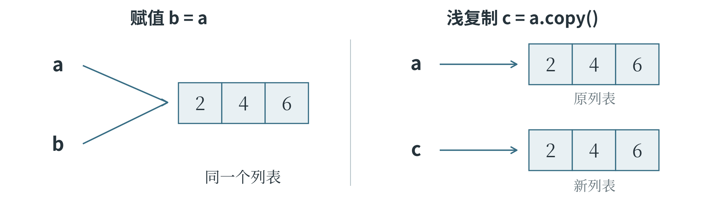
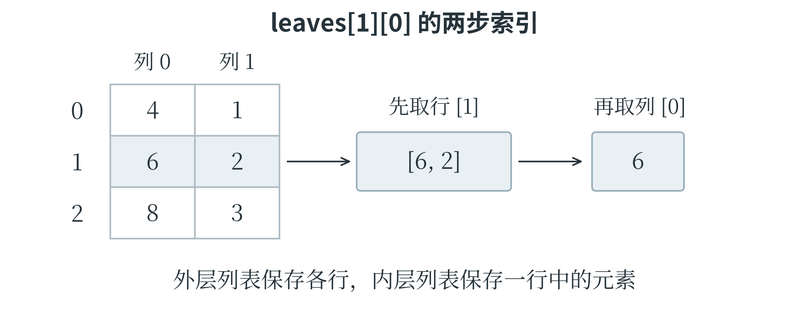

2.2 字符串与容器
按位置访问数据
一个变量可以记录一个数量，实际任务却常常要处理一组资料。容器用来把多项数据组织在一起，前面出现的列表就是一种容器，元组、字典和集合也是常用容器。字符串则把字符按先后顺序排列。这样有位置顺序、能够按位置取项的数据结构称为序列，字符串和列表都属于序列。索引就是元素的位置编号，从 0 开始；负索引从末尾算起，-1 表示最后一项，-2 表示倒数第二项。以 "Python" 为例，P 的索引为 0，y 为 1，依次到 n 为 5。在变量名后加方括号、写入索引，就能取出相应字符。下面再把取两端字符与取一段字符放在一起比较。
word = "Python"
print(word[0], word[-1]) # P n
print(word[1:4]) # yth
print(word[:3]) # Pyt
print(word[::2]) # Pto
print(word[::-1]) # nohtyP
方括号中使用冒号的写法称为切片，一般形式是 序列[start:stop:step]，三个名称分别表示起点、终点和步长。word[1:4] 从索引 1 开始，取到索引 4 之前，因此得到 "yth"，不包含索引 4 的 o。word[:3] 省略起点，从开头取到索引 3 之前；省略终点则一直取到相应方向的末端。没有写步长时按 1 前进，word[::2] 每隔一项取一项，word[::-1] 则从末尾向前逐项取得整个字符串。
单项访问和切片的边界规则不同：word[6] 超过了这个字符串的范围，会报告 IndexError；word[:100] 则只取存在的部分，仍得到整个字符串。列表也一样，data[1] 取一项，data[1:2] 得到含这一项的新列表。
“取一项”与“取一段”，连结果的类型都可能不同。
字符串可以用成对的单引号或双引号包围。某些不能方便地直接写出的字符，要用转义写法表示，例如 \n 表示换行符，\\ 表示一个反斜杠。print("第一行\n第二行") 会分两行显示文字。len() 可以取得字符串长度，普通汉字、英文字母、空格和标点通常各计为一项。更准确地说，Python 按 Unicode 码点计数：Unicode 为文字和符号安排编号，这些编号称为码点；少数显示为一个图形的符号由多个码点组合而成，长度便可能大于 1。字符串长度也不同于保存文件时所占的字节数，字节是计算机存储容量的基本单位之一。
把一段文字整理成需要的内容
文字记录中可能混有多余的空格，几项内容也可能挤在同一行。字符串提供了一些专门处理这些情况的方法。方法是与对象相关的操作，可以像函数一样调用，不过要先写处理对象，再写点号和方法名。例如，text.strip() 处理的是 text 指向的字符串，去掉两端的空白；text.split(",") 以逗号为界拆分；text.replace("旧", "新") 把指定文字替换为另一段文字。逗号在这里承担分隔内容的作用，称为分隔符。
字符串创建后不能直接修改其中的字符，这种性质称为不可变。上述方法会把处理结果返回，原字符串仍然保留原样；若希望变量以后使用新的文字，就需要把结果赋回去。下面整理一条包含编号、温度和状态的记录，每一步都先保留结果，再交给下一步使用。
line = " A17,23.5,正常 "
cleaned = line.strip()
parts = cleaned.split(",")
name = parts[0]
temperature = float(parts[1])
print(name, temperature, parts[2]) # A17 23.5 正常
print(" / ".join(parts)) # A17 / 23.5 / 正常
cleaned 保存去掉两端空格后的文字，parts 得到三个字符串组成的列表 ['A17', '23.5', '正常']。索引 0 取出编号，索引 1 取出温度文字，再由 float() 转成数值。最后的 join() 从另一个方向工作：用 " / " 作连接符，把列表中的字符串连接起来，参加连接的各项都应当是字符串。熟悉各步以后，前两次处理也可以连续写成 line.strip().split(",")；点号连用时，后一个方法处理的是前一个方法返回的结果。拆分时还要看分隔规则。split() 不带参数，会按连续空白拆分并忽略两端空白；指定逗号后，"a,,b".split(",") 却会得到 ['a', '', 'b']，中间空项被保留下来。它可能代表某项内容缺失，不能只为让结果整齐就删掉。读入原始记录之后，先分清这些数值、编号和标签的含义，后面的计算才有依据。
查找文字时，"on" in word 判断是否包含子串，word.find("on") 返回第一次出现的位置，没有找到则返回 -1。index() 也能找位置，但找不到时会报错。startswith() 和 endswith() 分别检查开头、结尾，lower() 与 upper() 用于大小写转换。需要按某个分隔符只拆一次时，还可以使用 partition()："A17:正常".partition(":") 得到包含前段、分隔符和后段的三个部分；rpartition() 从右边寻找分隔符。阅读陌生文本处理代码，重点是弄清每一步的输入和输出形状。
格式化把数值等内容按需要放入一段文字中。常用的 f 字符串在引号前加 f，用花括号标出需要计算并填入的位置；普通文字照原样保留。下面把编号和温度分别填入相应的说明。
name = "A17"
temperature = 23.5
print(f"编号：{name}")
print(f"温度：{temperature:.1f}℃")
两行输出分别是 编号：A17 和 温度：23.5℃。第二行花括号中的冒号后面写着 .1f，表示按一位小数显示。也可以使用字符串的 format() 方法，例如 "温度：{:.1f}℃".format(temperature)。格式化改变的是文字呈现方式，原来的数值不会因此改变。
列表与二维列表
前面已经用方括号建立过列表，也用循环读过它的元素。列表与字符串有一个明显区别：列表是可变的，可以直接替换元素，也可以增删元素。data[0] = 8 把列表第一项改成 8，data.append(4) 在末尾加入一个元素 4，data.extend([1, 5]) 则把另一组数据中的 1 和 5 逐个加入。append([1, 5]) 加入的是一个列表元素，extend([1, 5]) 加入的是两个整数，二者不能互换。
其他常用操作也有各自的处理对象。insert(i, x) 在位置 i 前插入元素 x；pop(i) 删除并返回该位置的元素，省略位置时处理最后一项；remove(x) 删除第一个等于 x 的元素，找不到时会报错。del data[i] 按位置删除，clear() 清空列表。列表允许保存不同类型的数据，但一组需要统一计算的观测值，应当保持适合计算的类型。下面先向列表添加数值，再把它们从小到大排列，这样的操作称为排序。
data = [3, 1]
data.append(4)
data.extend([1, 5])
print(data) # [3, 1, 4, 1, 5]
ordered = sorted(data)
print(ordered) # [1, 1, 3, 4, 5]
print(data) # [3, 1, 4, 1, 5]
data.sort(reverse=True)
print(data) # [5, 4, 3, 1, 1]
sorted() 返回排好序的新列表，原列表不变；列表的 sort() 则在原处调整顺序，返回 None。reverse=True 表示反向排序，这里按从大到小排列。若写成 data = data.sort()，data 最后会指向 None。append()、extend() 等修改列表的方法也通常不返回修改后的列表，使用时应分清“操作原对象”和“接收返回结果”。
需要倒转现有顺序时，reverse() 在原处反转，而切片 data[::-1] 得到新列表；反转并不等于按数值从大到小排序。
二维列表是在一个列表里放入多个列表，常用来表示行和列。grid[r][c] 先取第 r 行，再取这一行的第 c 项，两个索引都从 0 开始。Python 并不要求各行一样长；如果要把它当作整齐的表格使用，就需要自行保证行列关系。
grid = [[2, 4, 6], [1, 3, 5]]
print(grid[1][2]) # 5
grid[0][1] = 8
for row in grid:
row_total = 0
for value in row:
row_total += value
print(row_total) # 依次输出 16 和 9
外层循环每次取出一行，内层循环再逐项累加；进入新的一行时，row_total 重新从 0 开始，所以两行分别得到自己的总数。若需要修改指定位置，可以使用行列索引。对于这个两行三列的列表，第一列是 grid[0][0] 和 grid[1][0]。grid[0:2] 取得的是前两行，并不会自动取出“前两列”。行、列和单个元素的层次弄清楚以后，图像像素表和后面的数值数组就更容易理解。
赋值与复制
列表能够修改，这使赋值出现了一个值得留意的结果。变量名好比写着名称的标签，标签指向数据本身；写下 b = a，相当于给同一份列表又添了一个标签，并没有再做一份列表。此后沿着任何一个名字修改它，另一个名字都能看到变化。若需要一份独立的新列表，可以调用 a.copy()，也可以使用取完整范围的切片 a[:]。图 2-2 展示了下面代码在修改之前的关系。
a = [2, 4, 6]
b = a
c = a.copy()
b[0] = 9
print(a) # [9, 4, 6]
print(c) # [2, 4, 6]

这种关系称为共享引用。== 比较内容是否相等，is 判断是否为同一个对象；两个独立列表可以内容相等，却不是同一个对象。这里的复制属于浅复制：只新建最外面一层。若列表中还放着内层列表，新旧外层仍可能指向相同的内层对象。建立二维列表时，bad = [[0, 0]] * 3 就会把同一行重复引用三次，执行 bad[0][0] = 1 后，三行都会显示 [1, 0]。可以改用循环，每次创建一个新行：
rows = []
for _ in range(3):
rows.append([0, 0])
rows[0][0] = 1
print(rows) # [[1, 0], [0, 0], [0, 0]]
这里的 _ 是普通变量名，用它表示这次不需要使用循环序号。复制已有的规则二维列表时，若每行只含整数等不可变元素，可以逐行调用 copy()，得到相互独立的新行；嵌套层次更多时，还要继续看里面保存了什么。
是否会相互影响，要追到名字最终指向的对象。
从表格中提取一列
二维列表里的行列关系，值得用一个完整的小任务再看一遍。下面每一行表示一片叶子，第一项是长度，第二项是宽度，单位都为厘米。要求取出全部长度，并计算平均长度。
leaves = [[4.0, 1.0], [6.0, 2.0], [8.0, 3.0]]
lengths = []
for row in leaves:
lengths.append(row[0])
average = sum(lengths) / len(lengths)
print(lengths) # [4.0, 6.0, 8.0]
print(average) # 6.0
第一次循环，row 指向 [4.0, 1.0]，row[0] 是 4.0；接下来分别得到 6.0 和 8.0。外层列表中的一项是一整行，行中的一项才是一个数。因此，leaves[0] 取出第一片叶子的整行资料，leaves[0][1] 则取出它的宽度。若打算取所有宽度，应在循环中使用 row[1]。图 2-3 把几个索引的含义放在同一张表里。

lengths 保存了完整的一列。若只求平均数，也可以逐行累加，不另存这份列表；结果相同，留下的中间资料却不同。处理图像或一批样本时，也要先分清需要的是一条记录、一个属性，还是整片数据区域。
元组、字典和集合
元组也是有顺序的序列，不过创建后不能替换其中的元素，也不能增删位置。坐标可以写成 point = (3, 5)，通过索引读取，也可以用 x, y = point 把两项分别交给两个变量，这称为解包。只有一个元素时要写成 (3,)，逗号不能省略；(3) 只是括号中的整数。元组可以遍历，也可以保存列表，但“不能换掉元组中的元素”不代表“这个元素指向的列表也不能修改”。是否可变，需要看清具体对象。
列表用位置找内容，字典则用名称或其他键来找内容。字典的一项由键和值组成，键负责定位，值保存相应数据；写法是把各组 键: 值 放进花括号，组与组之间用逗号分开。例如，{"编号": "A17", "温度": 23.5} 用 "编号" 和 "温度" 作键，分别对应一段文字和一个数值。
record = {"编号": "A17", "温度": 23.5}
print(record["编号"]) # A17
record["温度"] = 24.0
record["状态"] = "正常"
print(record["温度"]) # 24.0
访问字典也使用方括号，不过里面写的是键。第三行修改已有键的值，第四行使用一个新键，于是增加了一项内容。字典的键不能重复，不同的键却可以对应相同的值。键常用字符串和整数，普通列表和字典本身不能直接作为键。为了按照标签统计数据，还可以把标签名当作键，把出现次数当作值：
labels = ["猫", "狗", "猫"]
counts = {}
for label in labels:
counts[label] = counts.get(label, 0) + 1
for label, count in counts.items():
print(label, count) # 依次输出 猫 2 和 狗 1
起初 counts 是空字典。第一次读到 "猫"，get(label, 0) 因为找不到这个键而返回 0，加 1 后记成 "猫": 1；读到 "狗" 时同样记成 1；再次读到 "猫"，就取出已有的 1，增加为 2。get() 后面的第二个参数是找不到键时返回的默认值，单独调用它不会增加键，真正的更新发生在赋值时。直接用方括号访问不存在的键则会报 KeyError。统计完成后，第二个循环用 items() 逐组取得键和值，label, count 对它们解包。直接遍历字典或写 label in counts，处理的则是键；keys() 提供键，values() 提供值。删除某项可以用 del counts[label]，也可以用 pop() 删除并取得对应的值。
字典保留插入顺序，但不会自动排序。用它统计各标签的数量，可以先看清这批分类数据大致是怎样分布的。
集合保存不重复的元素，适合判断某一项是否出现，也适合去重，即从重复内容中只保留一份。例如 set(["猫", "狗", "猫"]) 把列表转成集合，只保留两个不同标签。集合没有用于取第几项的索引，也不保证遍历顺序，不能靠打印时恰好出现的顺序完成“保留首次出现顺序”的任务。空集合写成 set()，{} 表示空字典；集合可以保存整数、字符串等，但不能直接把普通列表放作元素。集合的 add() 加入元素，discard() 删除指定元素，即使不存在也不报错；remove() 则在元素不存在时报错。
两个集合可以用 | 取得任一集合中出现的元素，称为并集；用 & 取得共同出现的元素，称为交集；用 - 取得只在前一个集合中出现的元素，称为差集。例如，{1, 2} & {2, 3} 得到 {2}。下一章会从数学角度进一步讨论这些关系。
表 2-2 概括了这几种容器的主要区别。选择容器时，要看任务需要保持位置、按键查找，还是只关心某项是否出现，而不是把所有材料都塞进同一种结构。
表 2-2 常用容器的比较
| 类型 | 怎样组织数据 | 可以怎样修改 | 常见用途 |
|---|---|---|---|
| 列表 list | 按位置排列，允许重复 | 替换、添加和删除元素 | 一组观测值、待处理记录 |
| 元组 tuple | 按位置排列，允许重复 | 不能替换或增删位置 | 坐标、固定的一组信息 |
| 字典 dict | 每个键对应一个值 | 添加键值对或修改值 | 按编号查记录、分类计数 |
| 集合 set | 保留互不重复的元素 | 添加或删除元素 | 去重、判断成员关系 |